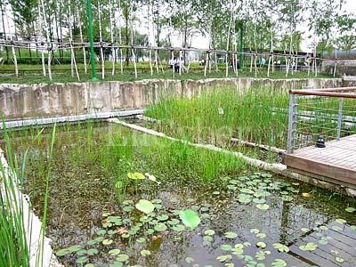
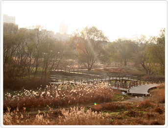
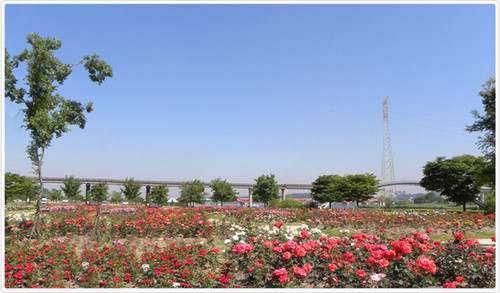

여의도 봄꽃축제는 넓게 트인 한강을 배경으로 풍성한 볼거리와 즐길거리가 넘치는 우리나라 대표 봄 축제이다.
아름다운 봄꽃과 다채로운 문화예술이 살아 숨 쉬는 봄꽃축제는 매년 4월 초 개막식을 시작으로
여의서로 및 한강공원에서 펼쳐지는 공연, 전시, 체험 행사로 상춘객의 설레는 마음을 가득 채워 준다.
2. 주변 볼거리

선유도 공원
한강 내의 섬 선유도의 옛 정수장을 활용한 국내 최초의 재활용생태공원

여의도 한강공원
봄꽃축제 등 다양한 행사가 이어져 볼거리와 즐길거리가 풍부한 휴식공간

양화 한강공원
둔치에 넓게 조성된 잔디밭에서 바라보는 탁 트인 전망이 다른 곳에서 쉽게 보기 힘든 풍광을 제공